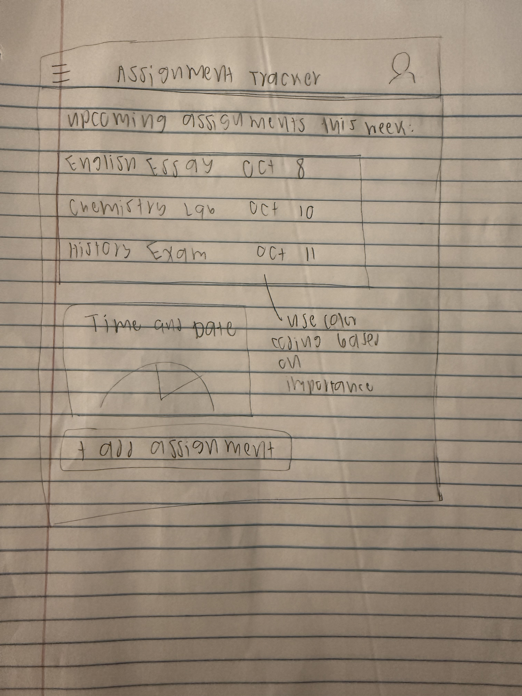

Problem Statement
A majority of college students struggle to keep track of their assignments and corresponding deadlines because they are balancing academics with extracurriculars.
Affinity Diagram

This Affinity Diagram organizes ideas for the student productivity app, including product ideas, hurdles, social media management, coupons/promotions, basic features, and constants/unchangeable elements.
Sketches
Click the image to open the PDF with all three sketches. Each sketch aligns with the Affinity Diagram insights.
- Sketch 1 – Dashboard: Quick assignment visibility with color-coded urgency.
- Sketch 2 – Calendar: Weekly layout balancing academics and extracurriculars.
- Sketch 3 – Reminders: Smart notifications to prevent missed deadlines.